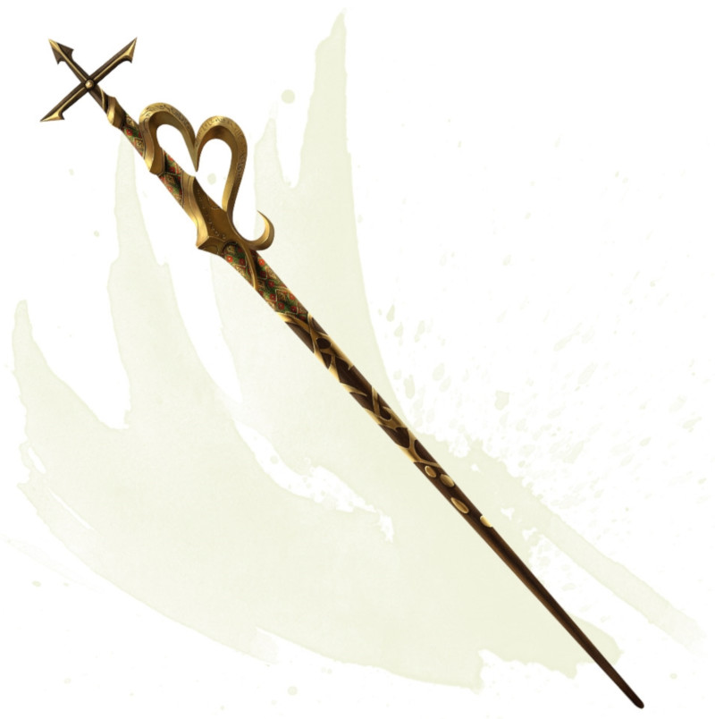

Staff of Charming
Staff, rare (requires attunement by a bard, cleric, druid, sorcerer, warlock, or wizard)
While holding this staff, you can use an action to expend 1 of its 10 charges to cast charm person, command, or comprehend languages from it using your spell save DC. The staff can also be used as a magic quarterstaff.
If you are holding the staff and fail a saving throw against an enchantment spell that targets only you, you can turn your failed save into a successful one. You can't use this property of the staff again until the next dawn. If you succeed on a save against an enchantment spell that targets only you, with or without the staff's intervention, you can use your reaction to expend 1 charge from the staff and turn the spell back on its caster as if you had cast the spell.
The staff regains 1d8 + 2 expended charges daily at dawn. If you expend the last charge, roll a d20. On a 1, the staff becomes a nonmagical quarterstaff.
If you are holding the staff and fail a saving throw against an enchantment spell that targets only you, you can turn your failed save into a successful one. You can't use this property of the staff again until the next dawn. If you succeed on a save against an enchantment spell that targets only you, with or without the staff's intervention, you can use your reaction to expend 1 charge from the staff and turn the spell back on its caster as if you had cast the spell.
The staff regains 1d8 + 2 expended charges daily at dawn. If you expend the last charge, roll a d20. On a 1, the staff becomes a nonmagical quarterstaff.
Dungeon Master´s Guide (SRD)
